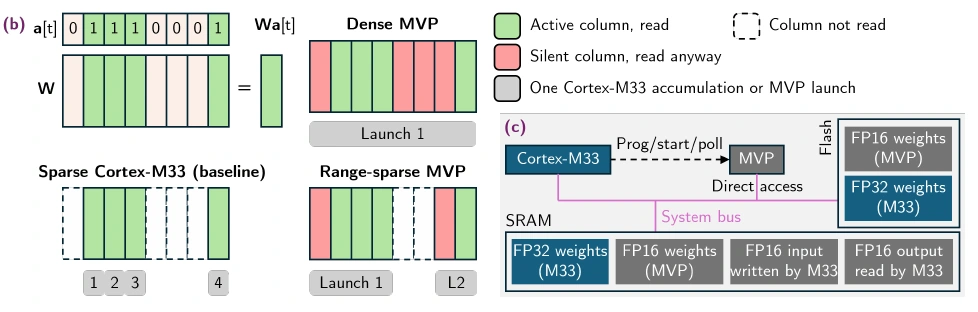

SpikeDuet
CPU–accelerator co-execution for sparse spiking neural networks on commodity microcontrollers. The deployment flow combines hardware-calibrated engine selection, neuron reordering, and asynchronous scheduling.
- Platform
- EFR32MG24 · Cortex-M33 + MVP
- Measured
- 1.27–1.87× speedup on five network configurations

